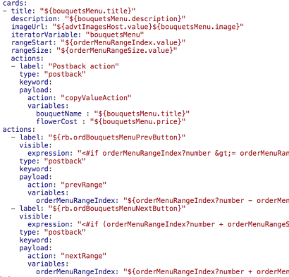
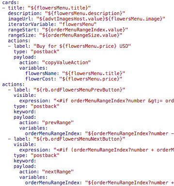
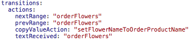

Oracle Intelligent Bots Advanced Training - Lab 4 (Dialog Flow - Adding Pagination)
Oracle Intelligent Bots Advanced Training - Lab 4 (Dialog Flow - Adding Pagination)This is the third part of a three-part lab on the dialog flow feature.
In the previous part, we improved the user experience for the flowers and bouquets menus by making them visually more attractive while still preserving entity slotting.
The last thing we'll do in this lab is add code to deal with large data sets. We'll implement pagination for the Flowers and Bouquets menus so that their data is loaded in chunks.
 Prepare Pagination
Prepare Pagination
To implement pagination, we need to keep track of the current index as well as the range size. Because the flowers menu and bouquets menu don't show at the same time, they can share the same context variable used for state tracking.
Create States for Current Index and Range Size
- Click to open the dialog flow editor.
- Near the top of the flow, within
variables, add these two variables:orderMenuRangeIndex: "int" orderMenuRangeSize: "int" - Navigate to the
endOrderFlowersstate and addorderMenuRangeIndexandorderMenuRangeSizeto thevariableListattribute. - Scroll to the top of the dialog flow, click the + Components button, click Variables, and select Set variable.
- From the Insert After dropdown, select startOrderFlowers.
Tip: The list of states has grown pretty long. To more quickly navigate to a state, you can type its first few letters in the Filter field above the select list.
Tip: If you can't seem to find a state though you know it is there, click the Validate link on the dialog flow editor. Chances are the state you are looking for has invalid indentation.
- Make sure the Remove Comments toggle is set to ON.
- Click Apply.
- Change the new
setVariablestate name toinitializeCardIndex. - Set the
System.SetVariablevalueattribute to0(zero). - Set the
System.SetVariablevariableattribute to"orderMenuRangeIndex". - Scroll to the top of the dialog flow, click the + Components button, click Variables, and select Set variable..
- From the Insert After dropdown, select initializeCardIndex.
- Make sure the Remove Comments toggle is set to ON.
- Just to try something new, while still in the component template, change the new
setVariablestate name tosetRangeSize.(Changing the state name or any other attribute value in the component template changes the generated component, but not the template itself.)
- Now click Apply.
- Set the
System.SetVariablevariableattribute to"orderMenuRangeSize".Setting the range size to the
variableattribute allows you to easily change the range size at runtime. E.g. you could use an expression to reference another variable that the user sets her preferred range size to. If the variable is in the user scope (user.variable_name) then the settings would even be persisted across sessions. - Set the
System.SetVariablevalueattribute to4.
Update Transitions
As the next transition is used on all of the states, we need to do some housekeeping before continuing.
- First, navigate to the
startOrderFlowersstate and change itsnexttransition from"setFlowersMenuData"to"initializeCardIndex". - Go to the
initializeCardIndexstate and add anexttransition as shown below:transitions: next: "setRangeSize" - Go to the
setRangeSizestate and add anexttransition as shown below:transitions: next: "setFlowersMenuData" - Click Validate to ensure you haven't introduced any indentation mistakes.
What We Just Did
- Created two context variables to hold and control the pagination state.
- Adjusted the values of the
nexttransitions to make sure that, with the added states, the flow continues working as it did before.
 Add Pagination for the Bouquets Menu
Add Pagination for the Bouquets Menu
With the range index and range size values set, you can now start implementing pagination for the Bouquets menu.
Add Page Range and Start Index
- Navigate to the
orderBouquetstate. - Set the
rangeStartattribute (located below theiteratorVariableattribute) to"${orderMenuRangeIndex.value}". - Set the
rangeSizeattribute to"${orderMenuRangeSize.value}". - Run the tester and try the Bouquets menu.
You will see only 4 cards are getting rendered at this time (the cards from array index 0 to 3).
Create Navigation Buttons
Though we have applied the page range size and start index to the card layout, we don't yet have an option to navigate to the next range of cards. The CR component does not provide navigation buttons, so we'll build them manually.
- Navigate to this lab's
resources, open theorderBouquetsNavButtons.txtfile, and copy its contents to your clipboard. - In the
orderBouquetstate, set the cursor in front of thetransitionselement and create a new line above it. - Place the cursor into the new line to the absolute left and paste the content from the clipboard.
- Ensure that the
actionsattribute of the added navigation buttons aligns with thecardsattribute.See the screenshot below to verify your indentation.
 - Add
nextRangeandprevRangeactions to thetransitionsattribute:nextRange: "orderBouquet" prevRange: "orderBouquet"Here's what it should look like:

- Run the bot and test the Bouquets menu.
You should see a Next button at the bottom of the cards.
- Click the Next button to display the next set of selections as well as the Previous button.
Notes on the Code
Pagination is now working for the Bouquets menu. Since most of the code in the CR component is what we provided for you, here's an explanation of the highlights.
- In the
cardselement, there are two postback buttons to manipulate theorderMenuRangeIndex. The two buttons also trigger navigation back to theorderBouquetsstate to get the updated start index and the range size to be reflected in the display. - The action button
labelattributes use a resource bundle reference for the displayed strings. We'll cover resource bundles later, so don't worry about how it works yet. - The two action buttons are rendered below the displayed cards. They are shown only when needed, which means that the Previous button shows when navigation to a previous set of cards is possible and the Next button is rendered when there is a next set of cards.
- To determine when the buttons show, Apache FreeMarker expressions and built-ins are used. The
<#if ..> <#else> </#if>clause works as in any other programming language. If the evaluate expression is true, the value of theifstatement (true) is returned. If not, then the value of theelsestatement is returned (false). - The
"?size"built-in returns the size of an array for theifstatement to test if there is a previous set of cards or a next set of cards available. - Note the use of
>=and<=instead of>=and<=. Because expressions in OBotML are added as markup to a property, using<and>causes invalid documents.
 Add Pagination to the Flowers Menu
Add Pagination to the Flowers Menu
Now let's take what we learned in adding pagination to the Bouquets menu and quickly apply it to the Flowers menu as well.
Add Page Range and Start Index
- Navigate to the
orderFlowersstate. - Set the
rangeStartattribute (located below theiteratorVariableattribute) to"${orderMenuRangeIndex.value}". - Set the
rangeSizeattribute to"${orderMenuRangeSize.value}". - Run the tester and try the Flowers menu.
Create Navigation Buttons
- Navigate to this lab's
resources, open theorderFlowersNavButtons.txtfile, and copy its contents to your clipboard. - In the
orderFlowersstate, set the cursor in front of thetransitionselement and create a new line above it. - Place the cursor into the new line to the absolute left and paste the content from the clipboard.
- Ensure that the
actionsattribute of the added navigation buttons aligns with thecardsattribute.The alignment looks as shown in the image below.
 - Add
nextRangeandprevRangeactions to thetransitionsattribute:nextRange: "orderFlowers" prevRange: "orderFlowers"Here's what it should look like:
 - Run the bot and test the Flowers menu.
You should see a Next button at the bottom of the cards.
- Click the Next button to display the next set of selections as well as the Previous button.